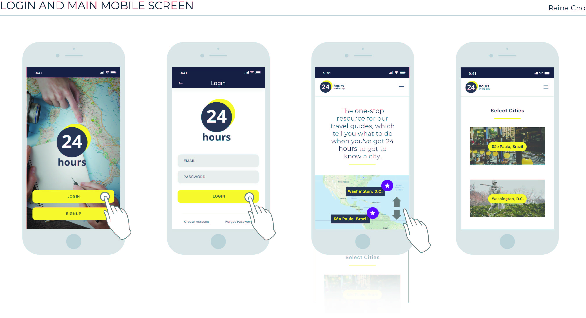
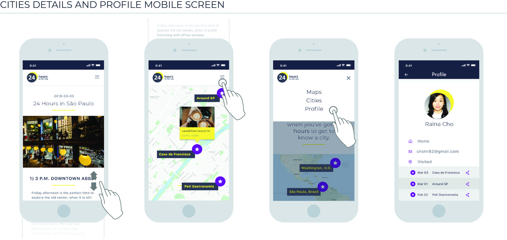

Google Maps API / PHP / MySQL
This mobile web application makes it easier for you to get to know a city within 24 hours with Google Maps APIs. As a travel guide, the one-stop resource tells you what to do when you’ve got 24 hours.
PAIN POINTS
Travelers still have to search about the place they plan to go even though there are lots of information with travel guides. Also, they need to save it with a note or other ways. I focus on this problem and find a solution with API.
SOLUTION
Google Maps API is a powerful tool for exploration, but it’s mostly used for navigation. Maps can inspire people to discover places, providing new reasons to use it, more often. By integrating Maps technology into the storytelling of the travel experiences from the people, Maps users playfully discover new features that are relevant and useful to them.
[ Google Maps API ]

[ Storytelling of Travel ]
COLOR SYSTEM
In this project, a primary color refers to a color that appears most frequently in the app.
A secondary color refers to a color used to accent key parts of the app UI.
[ Primary ]
[ Secondary ]
[ Basic ]
WIREFRAME
 